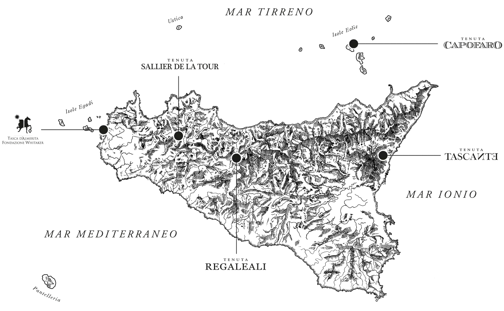

- Type
- White Still, Dry
- Producer
- Tasca
- Vintage
- 2018
- Location
- Italy, Sicilia DOC
- Grapes
- Sauvignon Blanc, Inzolia
- Alcohol
- 13.5
- Sugar
- NA
- Price
- 880 UAH
- Cellar
- N/A
Intriguing name - golden weeding. Count Giuseppe Tasca d’Almerita is a true wine maker as in 1984 he decided to celebrate 50 year anniversary with his wife Franca by making a wine to tell a story of estate and family. Regaleali Estate is located in Palermo, and both Inzolia and Sauvignon Blanc are cultivated by this family since WW1.
Producer
Wine producer from Sicilia, Italy. They cultivate grapes in the vineyards of 5 different estates:
- Tenuta Regaleali
- Tenuta Capofaro
- Tenuta Tascante
- Fondazione Whitaker
- Tenuta Sallier de La Tour

Ratings
2022-06-06 - 7.75
Interesting blend of Inzolia with Sauvignon Blanc, a pair of grapes for a wine called ‘golden wedding’ dedicated to 50 year anniversary of Count Giuseppe Tasca d’Almerita with his wife Franca. Slightly tropical bouquet mixed with citrus, pebbles and honeycomb. Fresh, good volume, long evolving aftertaste with nice slightly bitter finish. Flavours evolve from stone fruits with pineapple and lemon juice to honey and then end up with some hazelnut notes. Sounds more exciting than in reality, but it’s good.